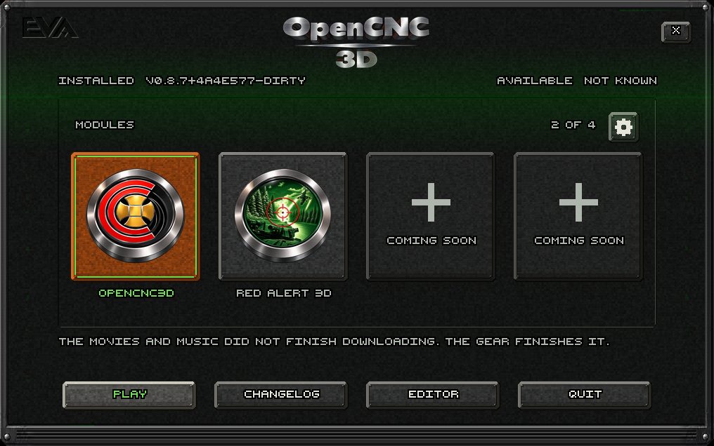

Actual native CPU renders of the approved OpenCNC3D emblem and shared identical ring around RA3D. Stronger signal sweep, per-control idle packets, moving hover energy and held feedback. The window uses its own Close control and the Enhanced green CUR00 pointer. Live GPU pointer matching and input pacing are independently verified in hidden windows.
